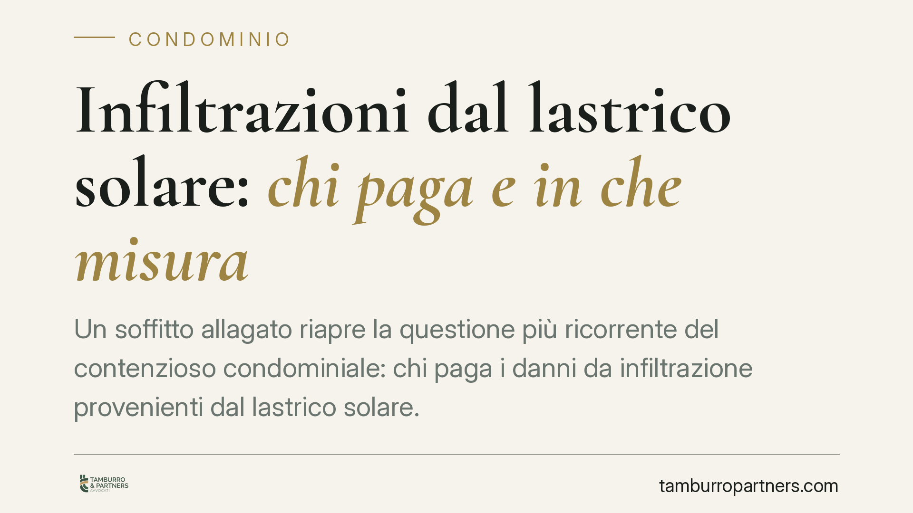

Infiltrazioni dal lastrico solare: chi paga e in che misura
Un soffitto allagato riapre la questione più ricorrente del contenzioso condominiale: chi paga i danni da infiltrazione provenienti dal lastrico solare. Il Tribunale di Torre Annunziata conferma la ripartizione di legge, ma precisa un punto spesso trascurato: le opere realizzate dal singolo proprietario restano a suo carico esclusivo. Una distinzione che incide sui conti di tutti.

Il caso
I proprietari di alcuni appartamenti lamentano infiltrazioni provenienti dal lastrico solare sovrastante, cioè la superficie piana di copertura dell'edificio. La domanda giudiziale chiama in causa sia il condominio sia i titolari del lastrico in uso esclusivo, chiedendo il risarcimento dei danni e il ripristino.
Il Tribunale di Torre Annunziata accoglie la richiesta, applica il criterio di riparto previsto dal codice e condanna i responsabili in solido alle spese. Con una precisazione rilevante sulle opere eseguite dal proprietario esclusivo.
Inquadramento normativo
La norma di riferimento è l'art. 1126 cod. civ., che regola le spese di manutenzione e ricostruzione del lastrico solare in uso esclusivo. La regola è netta: chi ha l'uso esclusivo del lastrico sostiene un terzo della spesa; i restanti due terzi gravano sui condomini a cui il lastrico fa da copertura, in proporzione al valore delle rispettive proprietà.
La ratio è intuitiva. Il lastrico assolve a una duplice funzione: serve chi lo utilizza in via esclusiva (per questo paga un terzo) ma protegge l'intero edificio sottostante (per questo il condominio contribuisce con i due terzi). Si tratta di una ripartizione forfettaria, consolidata anche dalle Sezioni Unite della Cassazione, che prescinde dall'accertamento di una colpa specifica.
Il criterio dell'art. 1126 c.c. riguarda però le spese relative al lastrico nella sua funzione tipica. Diverso è il regime delle opere aggiuntive realizzate dal singolo proprietario: pavimentazioni, strutture, manufatti installati per uso personale. Questi costi non seguono la ripartizione un terzo-due terzi, ma restano a carico di chi li ha voluti.
Sullo sfondo restano gli strumenti d'urgenza: la denuncia di danno temuto (art. 1172 cod. civ.) e il relativo procedimento cautelare (art. 688 cod. proc. civ.), utilizzabili quando l'infiltrazione minaccia un danno grave e imminente.
Implicazioni pratiche
Per chi subisce le infiltrazioni, la decisione conferma una tutela efficace: non occorre dimostrare di chi sia la colpa. È sufficiente il nesso tra il lastrico e il danno per ottenere condanna del condominio e del proprietario esclusivo, chiamati a rispondere in solido — ciascuno per l'intero, salvo poi regolare tra loro le quote interne.
Per il proprietario del lastrico l'avvertimento è chiaro: la quota di legge è un terzo sulle spese di ripristino della copertura, ma se il problema deriva da opere che ha realizzato (o se tali opere vanno rimosse per eseguire i lavori), quei costi li sostiene per intero. La distinzione può pesare in modo significativo sul conto finale.
Per il condominio, i due terzi non sono una condanna arbitraria ma l'applicazione di un criterio legale. Resistere in giudizio sostenendo l'estraneità dell'ente è, nella generalità dei casi, una strategia perdente che espone alle spese di lite.
Cosa fare in concreto
- Documentate subito il danno: fotografie datate, eventuale perizia tecnica e lettera all'amministratore. La prova dello stato dei luoghi è decisiva.
- Distinguete le voci di spesa: separate i costi di ripristino della copertura (soggetti al riparto un terzo-due terzi) da quelli di rimozione o rifacimento delle opere realizzate dal singolo proprietario.
- Valutate l'azione cautelare ex art. 1172 c.c. quando l'infiltrazione è in corso e minaccia danni ulteriori: consente di anticipare gli interventi urgenti.
- Verificate le coperture assicurative del condominio e del proprietario esclusivo: la polizza globale fabbricati copre spesso questi eventi e può evitare l'esborso diretto.
- Convocate l'assemblea per deliberare i lavori secondo il riparto di legge, mettendo a verbale la distinzione delle quote: una delibera corretta previene contenziosi interni.
La pronuncia non introduce principi nuovi, ma ricorda che l'automatismo dell'art. 1126 c.c. non copre tutto. Chi personalizza il proprio lastrico deve mettere in conto che quelle scelte restano, anche nei costi, a suo carico.
*Contributo informativo a cura di Tamburro & Partners - Avv. Giuseppe Tamburro. Non costituisce parere legale.*
Ogni condominio ha una storia a sé.
Se gestisci un'amministrazione e vuoi un confronto su una specifica questione condominiale, scrivi allo studio. Ti rispondiamo entro un giorno lavorativo.